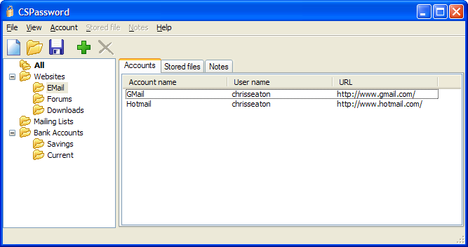

CSPassword
CSPassword, originally known as Password Safe, was a password manager that I wrote as a young teenager over a decade ago. It was not written with any knowledge of proper software development principles or cryptography, so I cannot recommend that anyone uses it. However, I know that some people still have a need to read CSPassword files so I am making the software available. You should only use CSPassord to migrate to a different password manager. Modern and properly engineered alternatives include 1Password and GnuPG.
Download
As I have said, you should only use these downloads to migrate to a different password manager.